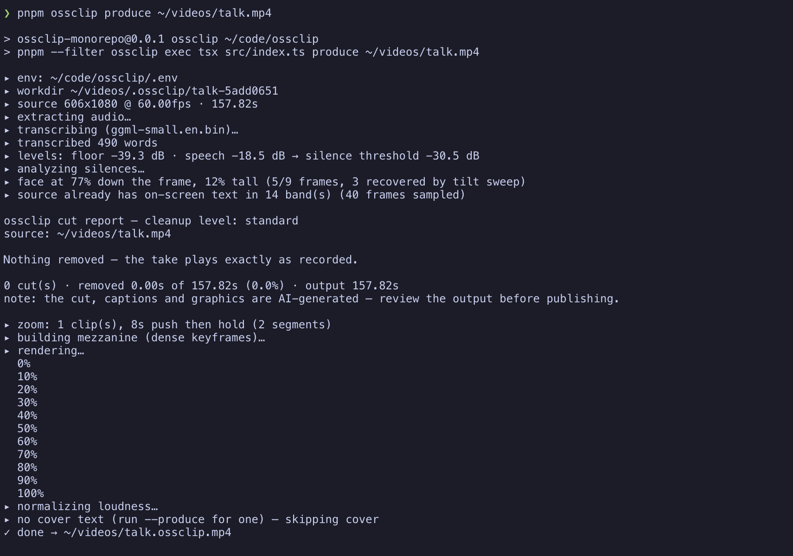
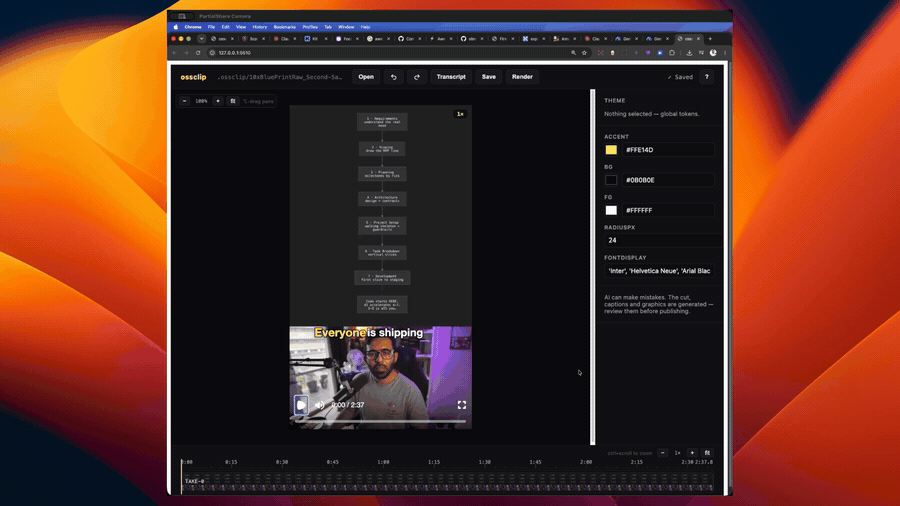

ossclip.
A local-first CLI that turns a talking-head take into a finished short: filler words and dead air cut, word-timed kinetic captions, face-aware framing, and LLM-planned, code-rendered on-screen graphics — title cards, stat cards, diagrams, terminal and chat mockups — planned against a hand-built, Zod-typed scene library. Plus a cover image sized for the platform.
Your footage never leaves your machine. Transcription is local (whisper.cpp), rendering is local (Remotion); the only network calls are the LLM planning ones — on your own API key, or on your existing Claude Code subscription.
Scope, honestly: ossclip is at its best polishing a take you have already cut down. For long-form input, --clip <seconds> selects the single strongest window (the producer's judgement, sentence-snapped) and produces only that — one clip, not N. Without it, 20 minutes in is a polished 20 minutes out.
AI can make mistakes: the cut, captions and graphics are generated — review the output before publishing.
working end to end · pre-1.0 ★ Star on GitHubLeft: the raw take. Right: what ossclip produce returns — this is the announcement reel, cut and captioned by ossclip itself. Starts muted; unmute for the audio, which is the produced cut.

One ossclip produce run, end to end — every stage says what it did and why.
Install
Two commands, on macOS, Linux, or Windows (plain PowerShell — no WSL, no admin rights). The only prerequisite is Node ≥ 22 from nodejs.org.
npm install -g ossclip
ossclip setupossclip setup provisions everything into one folder (~/.ossclip): a static ffmpeg build, a prebuilt whisper.cpp whisper-cli (on macOS both come via Homebrew), and the transcription model — small.en, ~466 MB, the biggest piece of a ~600 MB total. It shows the plan with sizes and asks before downloading, resumes interrupted downloads, verifies checksums, and skips anything you already have — an ffmpeg already on your PATH stays yours. Paths are recorded in ~/.ossclip/config.json, so nothing edits your PATH. Uninstall = npm rm -g ossclip plus deleting ~/.ossclip.
Setup also offers to save an LLM key for --produce: a logged-in Google Antigravity (agy) or Claude Code CLI is detected automatically, or paste an ANTHROPIC_API_KEY or GEMINI_API_KEY. Skip it freely — cut + captions run fully local without one. If anything looks wrong later, ossclip doctor prints a line per prerequisite and the exact fix.
Licence note, since setup downloads binaries: the static ffmpeg builds it fetches (BtbN) are GPL, downloaded onto your machine at your request — nothing GPL ships inside the MIT npm package.
Manual install (if you'd rather own the toolchain)
brew install ffmpeg whisper-cpp # macOS; Linux/Windows: ffmpeg from your package manager,
# whisper-cli from https://github.com/ggml-org/whisper.cpp/releases
mkdir -p ~/.ossclip/models
curl -L -o ~/.ossclip/models/ggml-small.en.bin \
https://huggingface.co/ggerganov/whisper.cpp/resolve/main/ggml-small.en.binossclip doctor checks all of it — with the per-platform command for anything missing. Binaries can live anywhere: point OSSCLIP_FFMPEG / OSSCLIP_WHISPER (or config.json) at them. Setup and manual install compose — setup only ever fills the gaps doctor would flag.
small.en is the default. A mistranscribed word ends up in your captions and on a graphic, so accuracy beats speed here — and --produce runs a repair pass over the transcript before anything is drawn. ossclip setup --model <name> downloads base.en (~142 MB) or medium.en (~1.5 GB) instead.
Non-English footage works too: drop any converted whisper.cpp GGML model (Hugging Face fine-tunes included) into ~/.ossclip/models and it's usable by name — the wizard lists whatever is installed — with --whisper-language ur|de|auto so a multilingual model decodes its own language. RTL captions (Urdu, Arabic, Hebrew) lay out right-to-left with the word highlight following spoken order, field-proven on a real Urdu run.
Quick start
# The whole thing: cut + captions + LLM-planned graphics + cover
ossclip produce input.mp4 --produce -o out.mp4
# Just the cut and captions — no LLM, no network
ossclip produce input.mp4 -o out.mp4
# See what would be cut and why, without rendering
ossclip produce input.mp4 --no-render
# Long-form in, one short out: the strongest ~60s window
ossclip produce podcast.mp4 --produce --clip 60 -o clip.mp4
# Keep your own editor: export the planned cuts as labelled markers — no LLM, no render
ossclip analyze input.mp4 --format premiere-xml # Premiere Pro
ossclip analyze input.mp4 --format resolve-edl # DaVinci Resolve (coloured)
ossclip analyze input.mp4 # Final Cut Pro (fcpxml)
# A folder of clips: sorted (--sort name|mtime), normalized, concatenated, produced as one
ossclip produce ./clips --produce -o out.mp4
# Check the whole toolchain first
ossclip doctor
# Open the editor over what a run produced (bare `edit` opens a project picker)
ossclip edit "<work directory>"
# Landscape (YouTube/desktop) instead of the 9:16 default
ossclip produce input.mp4 --produce --aspect 16:9 -o out.mp4Tutorials
Four walkthroughs, one per use case. Each is the shortest honest path — real commands, what you'll see, and the trap you'd otherwise hit. All of them assume install is done and ossclip doctor is green.
1 · Your first short
You have a talking-head take (30–70 s is the sweet spot). You want the finished vertical short.
# The whole pipeline: cut, captions, graphics, cover
ossclip produce take.mp4 --produce -o short.mp4- The run narrates itself: transcription, the measured silence threshold, every cut with a reason, the LLM's beat sheet, then the render. The same account is written to
report.txtbeside the video. - First runs are dominated by the render — measured at ~85% of wall time. A 7-minute take is roughly a coffee; re-runs answer from the work directory's cache and are near-instant.
- When it finishes you get
short.mp4, a cover JPEG, and an offer to open the editor. Take it: drag what the cut got wrong, retype a caption, delete a scene — your edits live inoverrides.jsonand survive every re-run — each anchored to the words it was made against, so it follows its moment even when a re-plan renumbers the scenes.
--produce. Cut + captions run fully local, no network. And if you're unsure of any flag, run bare ossclip — the wizard asks, then prints the exact command it's about to run, which is also how you learn the flags.2 · Keep your own editor: the cuts as markers
You (or your editor) already cut in Premiere, Resolve, or Final Cut, and want ossclip's analysis without its rendering. analyze runs the pipeline to the cut report — no LLM, no render, roughly transcription time — and writes a marker file. Every marker is a span: where the cut starts and where content resumes, named like silence -1.77s (conf 0.95). Nothing is applied for you.
ossclip analyze take.mp4 --format premiere-xml # Premiere Pro
ossclip analyze take.mp4 --format resolve-edl # DaVinci Resolve
ossclip analyze take.mp4 # Final Cut Pro (fcpxml)The format choice is the feature — these three are not interchangeable: Premiere does not read modern fcpxml at all, and Resolve's fcpxml import silently drops markers.
- Premiere: File → Import → the
.xml; relink the media if it shows offline. Markers arrive at the sequence level and on the clip itself — the clip-level ones are anchored to the footage, so they stay on the right words through your own razor cuts and ripple deletes. Work clip-markers-first if you remove as you go. - Resolve: get the timeline in however you like, then Media Pool → right-click the timeline → Timelines → Import → Timeline Markers from EDL → the
.edl. Colour-coded: silence Blue, pause Sky, filler Yellow, retake Red. (Plain File → Import conforms the EDL into a new timeline of one-frame clips — wrong menu, known trap.) - Final Cut: File → Import → XML.
pause 0.40s (kept)) — so a gap you can see in your waveform is never unexplained. Say a marker word on camera (--blooper-marker blooper) and flubbed takes arrive marked too.3 · One strong short from a long take
Twenty minutes of podcast in, one ~60-second short out — the window chosen editorially, not by trimming from the front.
ossclip produce podcast.mp4 --produce --clip 60 -o clip.mp4- The producer picks the strongest ~60 s in the same editorial call that plans the graphics, snapped to sentence boundaries. The report says which window, its share of the take, and the model's stated reason — a tool that discards 19 of 20 minutes owes you that account.
- The chosen window is pinned into
command.json, so the editor's re-render replays the same window with zero LLM calls — it can never drift to a different clip between renders. - One clip, not N — multi-clip is not built. A source already at or under the target just produces whole.
4 · Non-English footage
Any converted whisper.cpp GGML model works, Hugging Face fine-tunes included. Urdu, field-tested end to end:
# 1. Drop the model into the models folder (any GGML fine-tune)
curl -L -o ~/.ossclip/models/ggml-medium-urdu.bin <model URL>
# 2. Name the model AND the language — both flags matter
ossclip produce take.mp4 --whisper-model medium-urdu --whisper-language ur -o out.mp4- Don't skip
--whisper-language: whisper defaults to English decoding, and a multilingual model forced through English produces garbage, not a warning.autoworks when the take mixes languages. - RTL captions (Urdu, Arabic, Hebrew) lay out right-to-left with the active-word highlight following spoken order.
- The work directory records which model and language wrote its transcript — switching models re-transcribes instead of silently serving the cached English text, so A/B-ing
base.envssmall.envs a fine-tune on your own footage is just re-running with a different--whisper-model.
How it works
- Transcribe & repair — whisper.cpp locally, then an LLM pass that fixes mishearings (
cloud code→Claude Code) under a strict gate: a rewrite is refused, a mishearing is fixed, and every repair is logged with what was heard. - Cut — silences and fillers go by measured thresholds (
--cleanup exact…aggressive); the report says what was cut and why. - Captions — word-timed kinetic captions with an active-word highlight, routed around the platform's safe areas, the active graphic, and any text burned into the source.
- Producer — the LLM plans a beat sheet and scenes against the component library, steered by a measured framing brief (a wide band never lands on a close-up), grounded against the transcript so a stat it prints is a stat that was said.
- Verify — layouts that would crop the head are repaired, graphics route around the source's own on-screen text, on-screen copy is reconciled with the captions.
- Render — Remotion, locally, plus a cover JPEG at the OUTPUT's aspect: 9:16 framed for the profile grid's square crop, 16:9 framed as a thumbnail shown whole. With
--producethe cover carries the hook text; without it, the sharpness-scored face frame ships on its own.
The work directory
Every run writes <input dir>/.ossclip/<name>-<hash>/ — the hash is of the source's CONTENT, so the same footage reuses its cache (rename it and you still land in the same place; --workdir starts a separate project, deleting the directory forces a clean run): the transcript, the analysis, production.json, render-props.json, report.txt, usage.json, the cached LLM plan, and command.json — the recorded invocation the editor's Render button replays. It is a cache: delete it to force a clean run; keep it and re-runs are near-instant.
Each run appends to usage.json — one entry per run with its provider, models, tokens and cost — and stamps the same provenance onto production.json, so a workdir always says who planned it even when a later run answers entirely from cache.
overrides.json — a file the producer never writes. Re-running produce re-plans the video and keeps your edits. Re-rendering from the editor replays the same configuration as the recorded run — flags, aspect, and provider (the resolved provider is pinned into command.json, so an env-detected choice can't drift).Models & cost
Without --llm, ossclip picks: the Google Antigravity CLI (agy) → the Claude Code CLI (both subscription auth — plan usage, not API credits) → GEMINI_API_KEY → ANTHROPIC_API_KEY. Calls are tiered: editorial judgement (the beat sheet, transcript repair) goes to the main model; mechanical calls go to a smaller sibling.
▸ llm: 3 calls · 130,749 in / 8,321 out tokens · ~$0.72 of API-rate work, covered by the subscription · 92sReported token counts are exact where the provider reports them and marked (est) where derived; a model with no known price gets tokens and no cost guess. Per-call breakdown in report.txt, raw records in usage.json.
Editing

Select, drag, retype — every edit lands in overrides.json, which the producer never overwrites, anchored to the words it was made against.
ossclip edit "<work directory>" # opens http://127.0.0.1:5174
ossclip edit # bare: pick from recent projects, or browseKeybinds
Press ? in the editor for this list in-app.
transport
| space | play / pause |
| J / K / L | reverse · pause · forward (tap again to speed up) |
| ← / → | step one frame back / forward |
| ⌘/ctrl + ← / → | jump to and select the previous / next scene |
selection
| click | select scene or element |
| ⌥ + ← / → | select previous / next scene |
| esc | clear selection · close dialogs |
editing
| ⌘/ctrl + B | split the scene at the playhead |
| delete / backspace | delete the selected scene (restorable) |
| ⌘/ctrl + Z | undo |
| ⌘/ctrl + ⇧ + Z | redo (⌘Y works too) |
| ⌘/ctrl + S | save |
| double-click caption word | retype it in place |
| drag element / corner handles | move · resize |
| drag picture | pan the video framing |
view
| ⌘/ctrl + scroll on preview | zoom the view (never edits) |
| ⌥-drag / middle-drag | pan the zoomed view |
| ⌘/ctrl + scroll on timeline | zoom the timeline |
| ? | the in-app reference |
Scene components
Every component sizes its type to the slot it is given (nothing overflows the platform-safe area), animates in with a staggered rise, and leaves through a uniform exit fade. All text on them is editable in place.
Layouts
Layout places the video; the component always renders. Portrait (9:16) and landscape (16:9) each get frame-appropriate geometry — the split axis follows the frame's long edge.
| layout | arrangement |
|---|---|
| full-bleed | the talking head, full frame |
| blurred-behind | speaker blurred and dimmed behind a centred graphic |
| video-top | video band on top, graphic below (portrait) |
| pip-bubble | big graphic + the speaker in a round bubble (roundness and placement editable per scene) |
| graphic-only | the graphic owns the frame |
| lower-third | picture whole, card in the bottom band (broadcast lower third) |
| split-left / split-right | speaker fills one half, graphic the other (landscape; stacks in portrait) |
produce flags
| --produce | run the LLM producer brain. Without it: cut + captions only |
| --clip <seconds> | produce only the strongest ~N-second window of a long take, sentence-snapped (requires --produce; a short-enough source is produced whole). The report says what was chosen and why |
| --intent "<text>" | what the video should be — steers the producer's editorial choices |
| --speaker "<who>" | who is on camera — helps repair recognise a mangled name |
| --cleanup <level> | exact | light | standard | aggressive — how hard to cut silence and fillers |
| --aspect <ratio> | 9:16 (default) or 16:9 — landscape export with landscape-native layouts |
| --source-fit <mode> | cover crops to fill; contain shows the whole frame inset — the landscape-source escape hatch |
| --llm <provider> | antigravity | claude | claude-cli | gemini | mock |
| --llm-model / --llm-fast-model | override the editorial / mechanical model (same disables tiering) |
| --whisper-model <name> | transcription model for this run (base.en | small.en | medium.en, or any converted GGML model in ~/.ossclip/models) |
| --whisper-language <code> | language for a multilingual model, e.g. ur | de | auto (whisper defaults to en) |
| --no-repair | skip the ASR mishearing repair |
| --scenes <path> | hand-authored scenes JSON — no LLM in the loop |
| --source-is-edited | the source already has burned-in graphics — keep ossclip's off them (also what turns the source-text scan on) |
| --blooper-marker <word> | say the word on camera and the flubbed take is cut, back to the start of the sentence it spoiled. Matching is fuzzy (edit distance), so a mishearing like looker still counts — every fuzzy hit is named in the report. Off unless given |
| --collapse-retakes | deterministically collapse consecutive near-identical sentences, keeping only the last complete attempt — no marker, no LLM. Every kept/cut decision named in the report. Off by default |
| --sort <order> | folder input only: name (default, plain codepoint sort, matches ls) or mtime (oldest first) — the concatenation order |
| --watermark / --no-watermark | opt-in credit: a small "made with ossclip" wordmark in the top-left safe area. Off by default; "watermark": true in config.json defaults it on, a typed --no-watermark still wins |
| --no-captions | no burned-in captions — everything else intact. The CTA keyword styling rides the caption track, so it goes too |
| --no-cover / --cover <path> | skip, or redirect, the cover image |
| --no-render | stop after writing the props |
| --workdir <dir> | where the cache lives |
analyze — cut suggestions in your own editor
For editors who already have a workflow and just want the analysis: ossclip analyze <input> runs the pipeline up to the cut report — no LLM, no render, so it finishes in roughly transcription time — and writes a marker file your NLE imports. Every marker is a span covering the whole suggested cut (where it starts and where content resumes), named in the report's vocabulary: silence −1.77s (conf 0.95). Nothing is cut for you — they are labels to review. Pauses the analyzer detected but kept export too (pause 0.40s (kept)), so a gap you can see in your waveform is never unexplained.
Each NLE reads a different dialect — Premiere does not read modern fcpxml at all, and Resolve's fcpxml import silently drops markers — so pick the format for yours:
| format | for | how to import |
|---|---|---|
| --format premiere-xml | Premiere Pro | File → Import → pick the .xml; relink the media if it shows offline. Markers land at the sequence level and on the clip — the clip-level ones are anchored to the footage, so they survive your own razor cuts and ripple deletes |
| --format resolve-edl | DaVinci Resolve | import the timeline first, then Media Pool → right-click the timeline → Timelines → Import → Timeline Markers from EDL. Colour-coded by reason: silence Blue, pause Sky, filler Yellow, retake Red, kept pauses Lavender |
| --format fcpxml (default) | Final Cut Pro | File → Import → XML |
--out <path> overrides the destination (default: beside the input). The analysis flags above — --cleanup, --blooper-marker, --collapse-retakes, --whisper-model — all apply. analyse works too.
Configuration
~/.ossclip/config.json — all optional:
{
"model": "small.en",
"speaker": "Ahsan, host of the Code with Ahsan channel",
"fastModel": "claude-haiku-4-5-20251001",
"ffmpegPath": "ffmpeg",
"whisperPath": "whisper-cli",
"modelDir": "~/.ossclip/models",
"browserExecutable": "/path/to/chrome",
"pricing": { "claude-opus-5": { "inputPerMTok": 15, "outputPerMTok": 75 } }
}Provider keys come from the environment, and ossclip loads .env files before choosing a provider — first hit wins per key, a real environment variable always beats a file: $OSSCLIP_ENV_FILE → .env walking up from the cwd → ~/.ossclip/.env.
Env vars override the file: OSSCLIP_FFMPEG, OSSCLIP_FFPROBE, OSSCLIP_WHISPER, OSSCLIP_MODEL_DIR, OSSCLIP_MODEL, OSSCLIP_FAST_MODEL, OSSCLIP_SPEAKER, OSSCLIP_BROWSER.
Telemetry
ossclip reports a few anonymous usage events — command counts, wall-clock durations, the provider name, the source length as a bucket (<1m…>15m) — so effort goes where the tool is actually used. On by default; the first run prints a notice saying so. Never sent: footage, transcripts, file names, paths, --intent text, prompts, or keys — enforced by a guard in the code the test suite pins, not just by policy. The full event list is in the README's Telemetry section.
ossclip telemetry off # persisted in ~/.ossclip/telemetry.json
OSSCLIP_TELEMETRY=0 # per shell or per run
DO_NOT_TRACK=1 # the ecosystem-wide standard, honored tooossclip telemetry status shows the current state, names the switch that wins when it is off, and prints the anonymous id — a random UUID in ~/.ossclip/telemetry.json, tied to nothing.
Licensing
ossclip's own code is MIT — see the repo's LICENSE.
Rendering uses Remotion, which is source-available under its own two-tier licence, not MIT: free for individuals, non-profits, and for-profit companies up to the size stated in its terms; larger for-profit companies need a paid Remotion Company Licence. If you use ossclip inside a company, check Remotion's LICENSE — its terms are authoritative.
docs/PHASE1-FINDINGS.md. This page: docs/site/index.html, self-contained, ready for GitHub Pages.